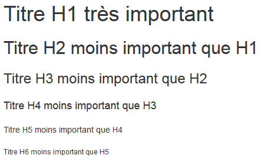

Balises couramment utilisée
Les titres

Ces balises permettent de définir des titres de différents niveaux <h1></h1> pour les grands titres et <h6></h6> pour les titres des sections très spécifiques.
Ils sont affichés par défauts du plus grand au plus petit et en gras.
Les paragraphes
<p></p>
Cette balise permet de contenir un paragraphe
<p>Je suis un paragraphe !</p>
donne :
Je suis un paragraphe !
Les liens
<a></a>
Cette balise contient des liens vers des ressources exterieures (autres liens, sites web...).
Elle contient le texte qui sera utilisé pour le lien, l'attribut href de cet élément est utilisé pour définir l'URL cible, par exemple il faut taper :
<a href="https://www.google.fr/>La page d'accueil de Google</a>
pour obtenir ceci :
La page d'accueil de Google
Les images
<img>
Cette balise permet d'insérer des images dans le document HTML.
Pour cela il faut indiquer le chemin de l'image que l'on veut afficher avec l'attribut src et alt pour décrire l'image et aider les moteurs de recherches à mieu faire leur travail.
Par exemple pour afficher l'image ci dessous, il faut écrire ceci :
<img src="image/ourson.jpg" alt="ourson">
Les listes
<ul></ul>
<ol></ol>
<li></li>
Ces balises sont utilisées pour créer des listes.
<ul></ul> permet de définir une liste à puce non-ordonnée et <ol></ol> de définir une liste ordonnée.
Pour chacune de ces listes, ce sera la balise <li></li> qui permettra de définir un élément de la liste.
La mise en valeur
<strong></strong>
<em></em>
<mark></mark>
Ces balises servent à mettre en avant un élément important dans un texte, elles ont chacune un comportement par défault interpréter par le navigateur, par exemple la balise <strong></strong> est souvent interpréter en gras, mais attention cela ne veut pas dire que notre élément est défini en gras, cela se fera avec le CSS.
Le retour à la ligne
<br>
La balise <br> est surtout utilisé pour faire un retour à la ligne dans un texte, attention à ne surtout pas utilisé pour espacer des éléments entre eux, ce n'est pas recommandé.